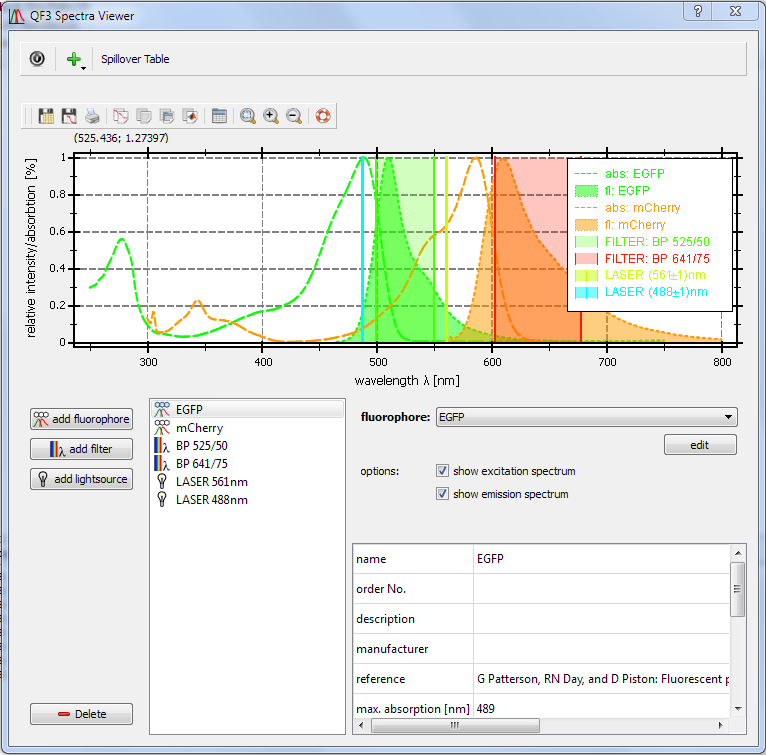
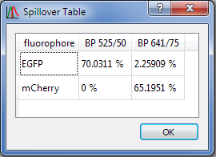

$$qf_commondoc_header.start$$ $$qf_commondoc_header.end$$
Introduction
This plugin displays spectra of
- fluorophores
- filters
- excitation sources
And can perform some simple calculations on these spectra:
- The "spillover table" calculates how much of each fluorophore's fluorescence spectrum is detected in each of the filters.
- The "FRET Calculator" estimates the Förtser radius (in Angstrom=0.1nm) between any two fluorophores.
User Interface

QuickFit Spectra Viewer User Interface
The user interface mainly consists of a graph displaying all spectra, a list of the selected speactra below the graph (bottom left) and
widgets to configure the diferent spectra (bottom right). On the lowwer bottom right there is also a table with different properties of the currently
selected spectrum (if available), e.g. fluorescence quantum yields, extinction coefficients etc.
To set up a plot, follow these steps:
- Use the button "add fluorophore", "add filter" and "add lightsource" to add all elements you require. They will appear as list entries on the rhs of the buttons (initially with a blank name). use the "Delete" button to remove the currently selected item from the list.
- Now select any of the items in the list by clicking on it. The according configurationwidgets will appear on the rhs.
- fluorophore: select a fluorophore from the dropdown list and it's spectrum will be displayed. You can also separately activate/deactivate the absorption and emission spectra.
- filter: First select whether you want to set up a
- ... bandpass filter (then you give the central wavelength $$math:\lambda_c$$ and the spectral width $$math:\Delta\lambda$$. The filter will have a transmission of 100% in the range $$math:\left[\lambda_c-\frac{\Delta\lambda}{2} ... \lambda_c+\frac{\Delta\lambda}{2}\right]$$ and 0% outside.
- ... filter with spectrum, then you can select one of the available spectra.
In both cases it is possible to tell QuickFit whether the filter is used for excitation or detection, using the "type" combobox.
- lightsource: First select whether you want to set up a
- ... laser (single wavelength) source wth a given central wavelength $$math:\lambda_c$$ and the spectral linewidth $$math:\Delta\lambda$$. The lightsource will emit in the range $$math:\left[\lambda_c-\frac{\Delta\lambda}{2} ... \lambda_c+\frac{\Delta\lambda}{2}\right]$$ and will be displayed as a colored bar/range in the plot.
- ... lightsource with spectrum (e.g. Hg lamp or LEDs), then you can select one of the available spectra.
- The spectra will be colored according to their maximum intensity wavelength (for fluorophores the maximum emission intensity, so EGFP will be green and mRFP1 red!). Lightsource spectra are shown in gray. All emission spectra are plotted as filled curves.
The Spillover table can be accessed with the according button on the top left. A new window will appear:

Spillover table dialog
In each table cell it contains the normalized overlap integral of the fluorophore's emission spectrum $$math:\phi(\lambda)$$ and the filter's transmission $$math:\epsilon(\lambda)$$:
$$bmath:S=100%\cdot\frac{\int\phi(\lambda)\cdot\epsilon(\lambda)\;\mathrm{d}\lambda}{\int\phi(\lambda)\;\mathrm{d}\lambda}$$
It is assumed that both spectra are normalized, so $$math:\max(\epsilon(\lambda))=1$$.
If the data of any item is not correct, you can edit it using the "edit" button next to the according spectrum dropdown list. You can also create a new fluorophore/filter/lightsource dataset by using the "+" button on the top-left and selecting the according entry in the popup menu.
- A new dialog will pop up that allows to edit some generic data (references, names, ...) and (on a second and third tab) the spectra themselves.
- The ID is used as an internal ID only, so it is never cisible to the user. If the ID is already in use the old dataset is overwritten. You can also use this to copy a spectrum, by simply editing it and renaming the ID. This will create a copy.
- There are two databases. One is delivered with QuickFit and cannot be edited. If you still edit an entry, a new entry in your user-database is created that superseeds the initil one, but the initial one won't be deleted. The location of the user database is initially in $$plugin_info:configdir:qfe_spectraviewer$$, but this can be changed in QuickFits options dialog. The readonly default database can be found in $$plugin_info:assetsdir:qfe_spectraviewer$$.
In these directories, the .ini files contain all the metadata and the .spec files contain the spectra as comma-separated values.
The simplest way to add a spectrum is to copy it from e.g. Excel or the table plugin: open the spectrum there and copy the two columns you want to use. Then you can paste them in the spectra editor tabs. You can also use digitizer software like Engauge to read spectra from printed/PDF publications.
- If you want to contribute to QuickFit, please send us your spectra via e-mail, then we can include them in the QuickFit installer.
The Förster radius calculator can be accessed with the according button on the top left. A new window will appear:

Förster radius calculator window
This window calculates the Förster radii between all pairs of currently selected fluorophores. Each row in the resulting table corresponds to one donor fluorophore. The columns encode the acceptors.
The calculation is performed, by first estimating the overlap integral between the donor emission spectrum $$math:F_D(\lambda)$$ and the acceptor absorption spectrum $$math:\epsilon_A(\lambda)$$:
$$bmath:J=\frac{\int F_D(\lambda) \, \epsilon_A(\lambda) \, \lambda^4 \, d\lambda}{\int F_D(\lambda)\,d\lambda}.$$
Then the Förster radius is given by:
$$bmath:R_0=0.211\cdot\left(\frac{J\cdot Q_D\cdot \kappa^2}{n^4}\right)^{1/6},$$
where $$math:Q_D$$ is the quantum efficiency of the donor without the acceptor and $$math:n$$ is the refractive index of the solvent.
The factor $$math:\kappa^2$$ is the dipole orientation factor, which is often chosen to be $$math:\kappa^2=2/3\approx0.66667$$.